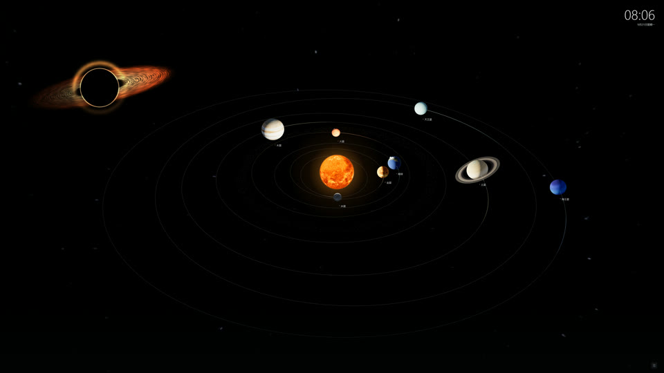

把整个太阳系
放进你的桌面
可交互的三维太阳系动态壁纸。八大行星的公转与自转、木星四颗伽利略卫星、土卫六、双尾彗星、太阳日珥，以及六艘带通信光点的深空探测器。行星位置由真实星历计算，全部贴图与代码内嵌在单个文件里——完全离线、无网络请求。
在线版需要支持 WebGL 2 的浏览器与硬件加速。设为桌面壁纸请下载安装包，拖入 Lively Wallpaper 即可应用。

它有什么
- 八大行星公转与自转、土星环、地月系统、小行星带
- 行星卫星木星四颗伽利略卫星、土卫六，拉近可观察
- 双尾彗星离子尾背离太阳，接近太阳时彗尾增强
- 太阳活动五组缓慢变化的日珥与轻微耀斑
- 六艘深空探测器三种造型，独立航线与通信光点
- 深空背景银河星野、流星与黑洞吸积盘
- 两种周期模式观赏压缩周期差异 / 真实比例统一模拟时间
- 4K 与高帧率20–144 帧可选，30 帧以上支持 5120 宽渲染